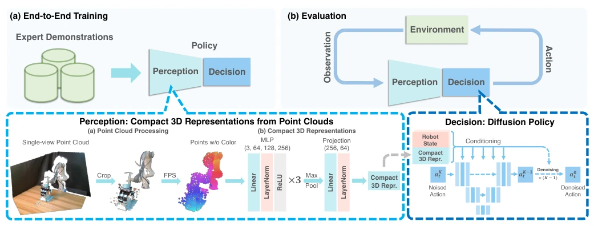
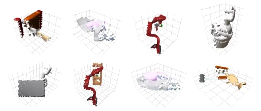
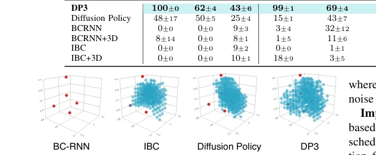
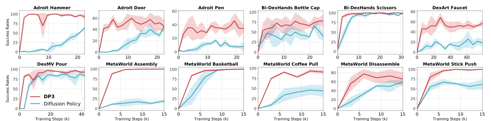
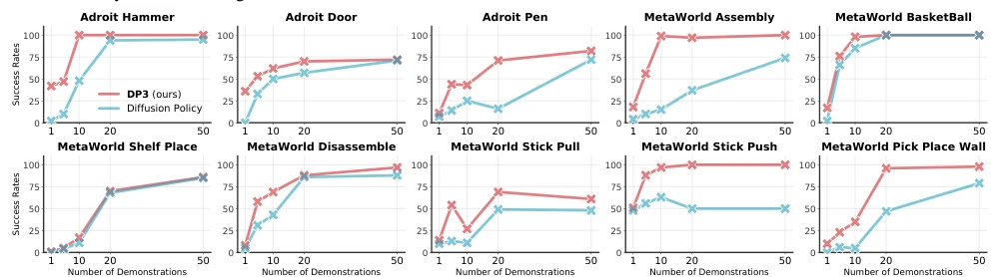
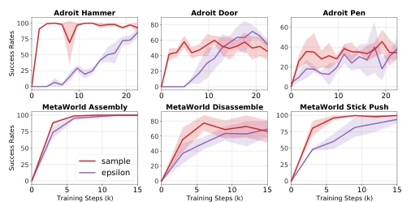
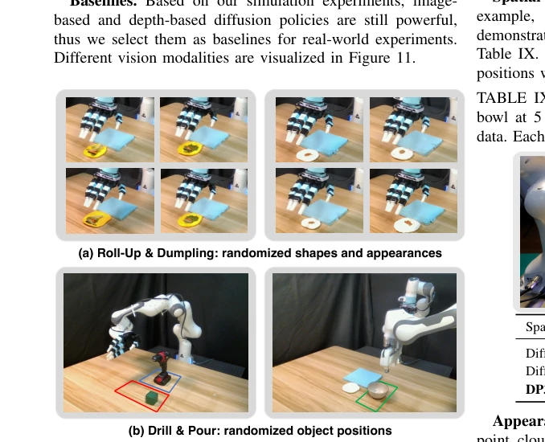
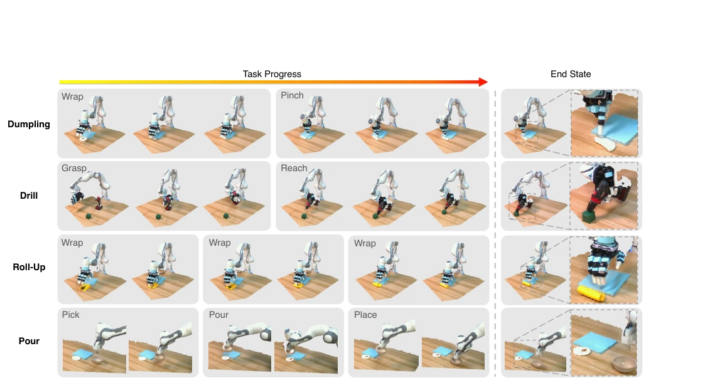

This paper adds more fuel to the fire of the "3D Vision + Diffusion Policy" combination, yet there is a hint of pragmatism amidst the powder. The authors did not engage in fancy Transformer stacking, but instead compressed the point cloud into a 64-dimensional vector fed to Diffusion Policy, resulting in significantly outperforming the original Diffusion Policy [10] in 72 simulation tasks, with a relative improvement of 24.2%. Most ironically, those 3D methods claiming to be "general-purpose" often have inference speeds as slow as snails, yet DP3 achieved speeds faster than the original version. However, do not rush to praise "general-purpose"; it mainly excels in dexterous hand manipulation and grasping, while long-horizon tasks remain sidelined. In terms of safety, it was a surprise; baseline methods often hit walls, yet DP3 actually had 0 violations, suggesting that 3D information indeed helps robots "see". But the authors also admit that the optimal 3D representation has not yet been discovered, and long-horizon remains a future direction.
研究动机Motivation
模仿学习教机器人干活很高效，但有个致命伤：太费数据。SOTA 方法 Diffusion Policy [10] 每个任务要 100 到 200 次人类演示，收集过程耗时且容易失败。虽然在线学习能缓解，但引入了安全和硬件成本问题。现有的 3D 策略如 PerAct [60] 和 GNFactor [82] 虽然引入了 3D 信息，但大多基于预测 - 规划范式，不适合高维控制，且推理速度慢（PerAct 仅 2.23 FPS）。如何在少演示下实现鲁棒、泛化的模仿学习，尤其是结合 3D 模态的高效策略，是核心痛点。此外，现有方法在真实世界部署时往往缺乏安全性保障，这也是 DP3 试图解决的问题。
Imitation learning is very efficient for teaching robots tasks, but has a fatal flaw: it consumes too much data. SOTA method Diffusion Policy [10] requires 100 to 200 human demonstrations per task, and the collection process is time-consuming and prone to failure. Although online learning can alleviate this, it introduces safety and hardware cost issues. Existing 3D policies such as PerAct [60] and GNFactor [82], although introducing 3D information, are mostly based on the predict-plan paradigm, unsuitable for high-dimensional control, and have slow inference speeds (PerAct only 2.23 FPS). How to achieve robust, generalizable imitation learning with few demonstrations, especially efficient strategies combining 3D modalities, is the core pain point. Furthermore, existing methods often lack safety guarantees when deployed in the real world, which is also the problem DP3 attempts to solve.

Fig. 2: Overview of 3D Diffusion Policy (DP3). Above: In the training phase, DP3 simultaneously trains its perception module and decision-making process in an end-to-end manner using expert demonstrations. During evaluation, DP3 determines actions based on visual observations from the environment. Below: DP3 perceives its environment through single-view point clouds. These are transformed into compact 3D representations by a lightweight MLP encoder. Subsequently, DP3 generates actions conditioning on these 3D representations and the robot’s states, using a diffusion-based backbone. TABLE I: Main simulation results. Averaged over 72 tasks, DP3 achieves 24.2% relative improvement compared to Diffusion Policy, with a smaller variance. Success rates for individual tasks are in Appendix C.

Fig. 4: 3D visual observations in simulation. We sample some simulated tasks and show the downsampled point clouds in these tasks.
DP3 is overall divided into perception and decision parts, adopting end-to-end training. The perception end only uses monocular depth maps converted to sparse point clouds, removing redundant background points and cropping to bounding boxes, then downsampling to 512 or 1024 points via Farthest Point Sampling (FPS). Subsequently input into a lightweight MLP encoder (DP3 Encoder), containing three fully connected layers, LayerNorm layers, and max pooling operations, finally projected into 64-dimensional compact 3D features. The decision end follows the Diffusion Policy framework, using 3D features and robot pose as conditions to generate action sequences through a denoising diffusion model. DDIM scheduler is used during training, 100 timesteps, and 10 timesteps during inference. Innovations lie in: 1) Point cloud representation is superior to RGB-D and voxels, and does not require complex pre-trained encoders; 2) Removing color channels enhances appearance generalization; 3) Using Sample Prediction accelerates convergence; 4) Projection head reduces feature dimensionality to improve inference speed.

Fig. 3: Generalization in 3D space with few data. We use MetaWorld Reach as an example task, given only 5 demonstra- tions (visualized by •). We evaluate 1000 times to cover the 3D space and visualize the • successful evaluation points. DP3 learns the generalizable skill in 3D space; Diffusion Policy and IBC [11] only succeed in partial space; BC-RNN [35] fails to learn such a simple skill with limited data. Number of successful trials from left to right: 0 / 285 / 327 / 415.
Simulation covers 72 tasks (7 domains), using only 10 demonstrations. DP3 average success rate is 74.4%, superior to Diffusion Policy's 59.8%. Real-world 4 tasks (pinching dumplings, rolling plastic, etc.), success rate 85% under 40 demonstrations. Ablation experiments prove point clouds are better than depth maps/voxels, and simple MLP encoder is superior to PointNeXt. Generalization tests show superiority over baselines in space, viewpoint, appearance, and instance. In terms of safety, DP3 violation rate is 0%, while Diffusion Policy reaches 32.5%. Specific tasks include Adroit's Hammer, MetaWorld's Assembly, etc. In real-world scenarios, DP3 can handle deformable object manipulation, and requires no extra tools.

Fig. 5: Learning efficiency. We sample 12 simulation tasks and show the learning curves of DP3 and Diffusion Policy. DP3 demonstrates a rapid convergence towards high accuracy. In contrast, Diffusion Policy exhibits a slower learning progress and achieves notably lower convergence in most tasks.

Fig. 6: Efficient scaling with demonstrations. We sample 10 simulation tasks and train DP3 and Diffusion Policy with an increasing number of demonstrations. DP3 addresses all these tasks well and generally improves the accuracy with more demonstrations. Diffusion Policy also scales well on some tasks while still falling short of accuracy.
其他图片Other Figures

Fig. 7: Learning curves of DP3 with sample prediction and epsilon prediction. With sample prediction, DP3 generally converges faster, while epsilon prediction is also competitive.

Fig. 9: Randomization in collected demonstrations for real- world tasks. Roll-Up: The shape of the plasticine and the vegetables on it varies in each trajectory. Dumpling: The shape of the plasticine and the distribution of the meat floss on it are different in each trajectory. Drill: The red and blue rectangles respectively mark the range of positions where the cube and drill can be placed. Pour: The green rectangle marks the range of positions of the bowl.

Fig. 10: Our real robot benchmark consists of 4 challenging tasks. The Allegro hand is required to make a Dumpling, Drill the cube, and make a Roll-Up. The gripper is required to Pour dried meat floss in the bowl. Each task contains multiple stages. We visualize the point clouds of the collected trajectories.